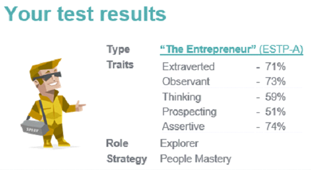
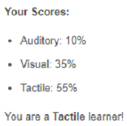

CURRICULUM VITAE OF
DECLAN BRUCE FREEMAN (S3332205)
https://github.com/dfreeman1/Declan-Freeman-CV.gitPersonal Details
S3332205@student.rmit.edu.au
58 Broadway St Elwood, 3075.
Phone Mobile – 0401234021 (preferred)
Nationality: Australian
Qualifications
- Advanced Diploma of Financial Planning (Monarch)
- Diploma of Financial Planning (Monarch)
- Business writer course (Action Words)
- Advanced Excel course (Dynamic web training)
- Currently enrolled in Bachelor of Business (Financial Planning) with RMIT
Strengths
- Hard working
- Task Driven
- Loyal
- Honest
- Good Communication
Interesting Fact about me
I travelled solo through Asia, America, Europe and South America.
Interest in IT
What is your interest in IT? When did your interest in IT start?
From a young age I have enjoyed playing video and computer games. After many hours spent across several consoles my skills became noticed by others. Following an area of passion feels natural to me.
Was there a particular event or person that sparked your interest? Outline your IT experience (if any).
My older brother graduated with a degree in IT and quickly became a sort after employee with many opportunities to travel internationally. This path to follow my passion along with travel seemed ideal.
Why did you choose to come to RMIT?
RMIT have a relationship with Open Universities and subsequently this allows me to study online at my preferred time. This is very important with balancing other areas of my life.
What do you expect to learn during your studies?
For me it is simple, develop a base level understanding on how websites and technology is created.
Ideal Job
https://www.seek.com.au/job/51618260?type=promoted#searchRequestToken=e370d3c8-5c70-4147-9d1b-abfc5d125c64
The most appealing part of the above role is the fact it’s an Australian founded business which has expanded globally into several other countries. This provides me with opportunities to follow my passion of IT whilst travelling the world.
For this role I would need to demonstrate a thorough understanding across all areas of IT, including the cloud and how to keep the business data secure. Although this role doesn’t require day to day coding it’s important the successor has the knowledge and can gain respect from the team they lead.
Currently I’m developing an understanding of IT lingo and the different platforms which developers use in day-to-day roles.
Once I’ve finished my studies the ideal role would be to expand my understanding of the cloud and cloud security. Once my technical skills have developed, it’s important to understand the tools which can be used to track business performance. Finally, managing people will become important to becoming a candidate for this position.
Personal Profile

Education Planner.org

Open Source Psychometrics Project
https://openpsychometrics.org/tests/IPIP-BFFM/results.php?r=4.1,4.4,3.2,3.4,3.4
What do the results of these tests mean for you?
These results surprised me with how well they represent all areas of my personality traits. Very accurate. I’m a tactile learner which means I prefer to try something in order to learn it.
How do you think these results may influence your behaviour in a team?
These results demonstrate I’m extroverted and someone who is assertive when it comes to decision making however, I can be stubborn when it comes to agreeing with others. These behaviours illustrate I am likely to be a decision maker within a team.
How should you take this into account when forming a team?
You want to limit the amount of people who are ‘entrepreneurs’ within one team, as these personality traits are highly extraverted and assertive, should there be too many in one team it could become overwhelming for others.
Project Idea
Overview
As a project I would like to provide a more user-friendly experience on the Garmin App to help individuals like myself better understand the data collected.
Garmin is an American technology company which provides accurate data based on satellite GPS, excellent for monitoring health and fitness.
Developing a mobile app for users to download and sync with their Garmin watches which will use AI to provide real time feedback during workouts, enabling users to make alterations to a workout in order to meet goals and objectives.
Motivation
A couple of years ago I wanted to improve my running. Subsequently I invested in a Garmin watch.
The data provided me with tangible statistics from workouts (see below), however I was left with little understanding of what this data meant.
Was I improving? How does this workout compare to my last workout? How should I adjust my workout to meet my goals and objectives?
I was left with lots of data but nobody to explain it.
The aim is to develop a mobile app which brings together the data, engages users by giving them feedback and suggestions for improvement.
Garmin App
Description
Prior to commencing this project, I spoke with family and friends, in particular I focused on individuals who were looking to improve health and fitness.
These individuals all had clear goals, many are monitoring progress yet are not using the data to benefit them, most found themselves simply on a ‘maintenance program’.
It’s clear we are missing a link in the chain, something which can be filled with artificial intelligence (AI).
To make improvements one must challenge themselves whilst also setting realistic expectations. Who better to set your next workout than the data from your previous workout?
The app will be called Seeresults.
Customers will be able to download the app for only $5 per month and any data accumulated will sync from smart watches to Seeresults.
Seereuslts will use AI to provide the following:
- Analysis of all data;
- Suggestions to adjust workout for improvement;
- Compare against previous efforts, ranking how hard they worked;
- Compare against benchmark for age, gender and weight;
- Set self-improvement targets;
- Provide intuitive feedback during workouts; and
- Competitions against other users;
Seeresults design will be user friendly with simple navigations.
Our vision statement “to improve health and fitness levels globally by analysing results”.Users will get Realtime feedback helping them stay on course for improvements as opposed to maintaining fitness.
We have all experienced firsthand how effective AI can be. Our online persona is made up of data from a number of sources and websites, AI uses this data to provide targeted advertisements.
The concept will be no different, Seeresults will use data from users to provide feedback and develop training plans aimed at improving times and health results.
Some setbacks I foresee are from the compliance and safety side.
We are aiming to challenge individuals, what happens if the goals we set cause someone injury? What if a user pushes to hard and has a heart attack? Are we aware of any health issues?
Without the correct data our analysis and suggestions may lead to errors.
These could lead to negative outcomes for users and ultimately damage our brand and financial stability.
Tools & Technologies
App developers will be required to make Seeresults as user-friendly as possible.
Simplifying complex data will take several medical and science professionals.
The AI will require up to date information, and tools to establish the database.
It’s very important the data is stored safely, the information will be sensitive and individuals must feel secure, cloud security may become a factor.
Skills Required
Establishing an app will require coding. There are many individuals who understand this aspect of IT and shouldn’t be overly difficult to find.
To analyse health and fitness data, professionals across the medical field will be called upon e.g. what is a good resting heart rate?
Cloud security will require a strong understanding of the cloud.
A strong understanding of AI, this will be the most difficult area to find skilled workers in my opinion. It’s a relatively new field and requires significant amounts of data to build, which simply does not exist at this point (we have no customers).
The field of AI might need to be developed down the track once customer growth occurs.
Outcome
The goal is to improve the overall health and fitness of users by providing them with detailed easy to understand analyses of workouts.
We have phenomenal amounts of data to analyse in today’s world.
Seeresults will go one step further than just analysing results, by providing individuals with alterations to workouts in order to keep them on track to meet their goals.
This should prove a very scalable business with recurring revenue.